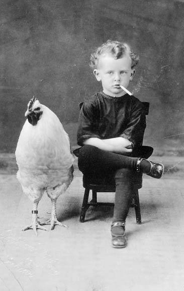

Wednesday, July the 31th, 2013
back to: title, date or indexes
As you know, I am currently keeping my eye out for chickens. Thanks, then, to Ruthie Bosch for sending me this snap of a chicken alongside a smoking child, from a century or so ago. I will probably receive a stern directive from some governmental agency insisting that I airbrush the gasper out of the photograph, but history is history. Weirdly, it seems that in the early twentieth century not everyone was in thrall to some kind of Blairite-Cameronian-Third-Way-Consensus, in spite of what the BBC tells us. (See Lark Rise To Candleford, and any other period drama.)
